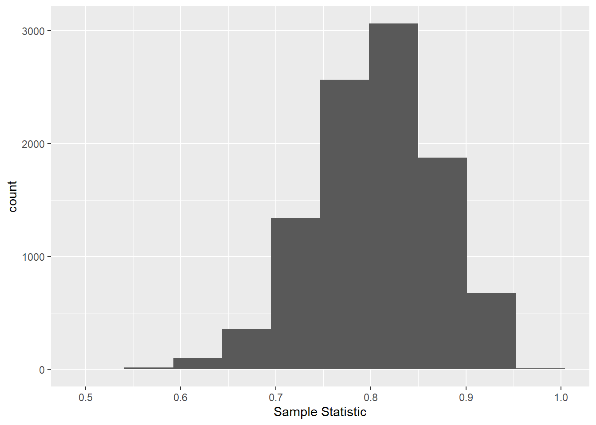

Chapter 7 Inference via Hypothesis Tests for One Sample
7.1 Example: Detection Probability
An important problem for the US Army is protecting soldiers in forward positions. One of main threats to these soldiers are explosive projectiles launched from great distances. These are often refered to as “indirect fires”, since the folks launching the projectiles (“firing” the projectiles) may not have direct visibility (“line of sight”) to their target. For example, artillery like the US M777 Light Towed Howitzer can fire projectiles over 40 km, far beyond the distance a soldier operating the machine could aim it. Instead, the gun crew relies on information about where to shoot provided to them by other units on the battlefield. This allows them to effect the battle from far away and without alerting their target.
To protect soldiers from similar threats, the US Army developed the Q-53 Counterfire Radar. One of this system’s primary functions is to detect incoming indirect fires and pinpoint the source of those shots. Because soliders will be relying on the Q-53 in combat, the US Government tested it extensively to better understand how it would perform in an operational setting. The testers fired shells from systems that closely resembled the artillery that might be seen on the battlefield while actual soldiers operated a Q-53. For each shell that was fired, the testers recorded whether or not the Q-53 crew was able to detect the projectile with their system.
Using data from this test, evaluators were able to the likelihood that the Q-53 would detect an incoming projectile.
7.1.1 Understanding system performance
Let’s take a step back and consider the data we’re getting from this test and try to understand why the testers did things the way they did.
First, let’s consider the goal of this test. At the end of the day, the US Army wants to know how effective the Q-53 is at it’s job. This job is to help protect soldiers by giving them early warning if they’re under attack from indirect fires like artillery. Therefore, it’s vital that the Q-53 detect incoming projectiles with high probability.
Once we understand this, the choice to measure the detection probability for incoming projectiles is completley logical. This measure ties directly to the goal of the experiment. You won’t always be able to find a response variable that ties so directly to the goal of your test, but when you do, rejoice.
There are some other measures the testers could’ve used. For example, they could’ve looked at how long a projectile was detected prior to its impact on the target. Similarly, they could’ve measured the distance from the target at time of detection. Both of these measures would give more detailed information than detection alone. However, they’d be harder to measure precisely. Addiing additional instrumentation to the Q-53 and to the test projectiles being fired at the range would add elements to the experiment that would make it less realistic. Perhaps instrumenting the projectiles would make them easier to detect. Regardless, the testers deemed the detection probability adequate to make their assessment of the system.
7.1.2 Data Analysis
Having identified their response variable, the testers collected data on which projectils were detected. Table 1 shows the first 20 shots collected.
tb <- readr::read_csv("datasets/Experimental/counterfire-radar/counterfire-radar.csv") %>%
filter(Mission %in% c(1:4))
hist(tb$Detection)
It’s clear that the system detects these projectiles with a high probability, but what conclusions can we draw from these data? Does the system detect projectiles at a high enough rate to be useful to a commander in the field?
Typically, you’ll want to think about these questions before designing a test or analyzing your data. In the case of this counterfire radar, the US Army has specified in requirements documents what it deems to be “good enough” in terms of detection probability. Suppose the Army requires that the system be able to detect at least 80% of incoming projectiles.
Using that requirement, we can compare the probabiltiy of detection we observed in our sample and get an idea of whether or not the system is good enough:
## [1] 0.804878Let the true probability of detection for this radar system be \(\pi\), a value somewhere between \(0\) and \(1\). Then our estimate for \(\pi\) is denoted:
\[\hat\pi = \frac{1}{n}\sum_{i = 1}^n x_i\]
In this equation, \(x_i\) is 1 or a 0 depending on whether or not we detected the \(i\)th projectile, and \(n\) is the total number of observations we have. We can use this notation to state the research problem we describe above more formally: We want to determine if \(\pi > 0.8 = 80%\). To do this, we’re going to use our estimat, \(\hat \pi\).
The simplest approach is to just say that \(\hat \pi\) is our best guess for \(\pi\), so let’s just ask if \(\hat \pi> 0.8\). Based on our data above, we have: $= $0.804878. This is larger than 0.8, so it looks like we’re good to go!
Unforunately, \(\hat \pi\) is an estimate of \(\pi\) and not the true value. It is based on a random sample, which are subject to variability. Before drawing any conclusions, it’s important to ask the question, “How sure are we that \(\hat\pi\) is close to \(\pi\)?”
7.2 Hypothesis testing
The framework used throughout modern science to answer these sorts of question is known as Null Hypothesis Significance Testing (NHST), or more concisely, hypothesis testing. The basic approach is to frame our research question as a comparison between two possible realities and then decide, based on the data, if one of those realities is sufficiently implausible to discard as an actual possibility.
For our application, the two competing realities are one in which the radar’s performance meets the desired performance of the Army (that is, \(\pi > 0.8\)) and one where it does not (\(\pi \le 0.8\)). These possibilities are derived directly from our research question, and are typically phrased explicitly as a Null Hypothesis (denoted \(H_0\)) and an Alternative Hypothesis (denoted \(H_1\) or \(H_a\)). The null hypothesis is typically written in such a way that, if we can prove it is not true, we will have learned important information. For this example, if we can show that the system’s probability of detection isn’t worse than \(0.8\), we’ll know that it’s at least good enough to meet the Army’s desired level of performance. Therefore, we write our null and alternative thus:
\[H_0: \pi \le 0.8\] \[H_1: \pi > 0.8\]
Our goal is to determine, based on the sample we’ve collected, whether \(H_0\) is plausible. There are many ways that statisticians have developed over the years of determining this, but we’ll focus on one for now.
The first thing to do is consider our data, which are records of whether or not the radar system detected each of the 41 projectiles shot during the test event. We must make some general assumptions about these data if we’re to get anyhwere. Plausible assumptions include:
- One shot is independent from the next
- The underlying probability of detection for each shot is the same
If these assumptions hold, than each observation is a Bernoulli random variable with \(P(Detect) = \pi\) and \(P(NoDetect) = 1 - \pi\).
This is very useful knowledge, since we know a lot about how Bernoulli random variables behave. For example, software can simulate Bernoulli random very easily. The function rbernoulli in the purrr package will simulate the outcomes of n random draws from a Bernoulli distribution with probability of success pi. The function will output TRUE for each success and FALSE for each failure. For our example, TRUE will represent the case where the radar detected the projectile and FALSE will represent the case where the radar failed to detect the projectile. This allows us to simulate what might have happened in our experiment. To do this, we need to provide values for n and pi. Luckily, we know the number of observations we had in our experiment ($n = $ 41), and we can postulate a value for pi based on our hypotheses above.
Recall that our goal is to determine whether \(H_0\) is plausible. If the outcome of our actual data is consistent with what the outcome might have looked like if \(H_0\) was true, then we’ll conclude that \(H_0\) is plausible. So let’s plug in a value for pi based on the values of \(\pi\) given in \(H_0\). The highest value of \(\pi\) included in \(H_0\) is \(0.8\), so we’ll go with that. (If we chose a lower value, our comparison would be less compelling, so when we take this approach, we’ll always choose the value under \(H_0\) that’s closest to the values included under \(H_a\).)
We can now simulate what the outcome of our experiment might have looked like if \(H_0\) was true:
## [1] 0.8292683But this is just one possible outcome. Each trial is random, so the overall outcome is random, too. This means that we should look at many possible results from the experiment to get a more complete picture of what things might look like under \(H_0\). The code below simulates 10,000 experiments and calcualtes the sample proportion for each. These sample proportions are then plotted in a histogram:
nsim <- 10000
simulation_results <- tibble(`Sample Statistic` = rep(0, nsim))
for(i in 1:nsim){
simulation_results$`Sample Statistic`[i] <- mean(purrr::rbernoulli(n, .8))
}
simulation_results %>%
ggplot(aes(x = `Sample Statistic`)) + geom_histogram(bins = 10)
7.2.1 Wald tests
Luckily, we have tools available to help us answer that question! Specifically, we can use the standard error, which was introduced in Chapter 4. Recall that the equation for the standard error of \(\hat\pi\) is
\[SE(\hat\pi) = \sqrt{\frac{\hat\pi (1 - \hat\pi)}{n}}\]
For our observed data, \(SE(\hat\pi) =\) 0.06. Using these values, we can determine with greater precision whether the true performance of the radar system meets the desired level of performance.
–>
–>
–>